9 面部上三分之一：水平额纹与C角
面部上三分之一的水平额纹和C角
JANI VAN LOGHEM
9.1 水平额纹
通常不使用羟基磷灰石钙（CaHA）治疗水平额纹。这是因为这些皱纹本质上是动态性皱纹，因此常选择肉毒毒素进行治疗。原型的CaHA粘度过高，因此浅层注射可能导致出现团块感和透过皮肤可见的白色变色。在选择填充剂从真皮内治疗水平额纹时，软性透明质酸填充剂是首选。稀释后的CaHA可有助于改善额部皮肤质量，从而有助减轻水平额纹。
另见图9.1了解额部的危险区域。
9.2 水平额纹：高倍稀释、锐针技术
注射定位参见图9.2。
9.2.1 分步技术
- 考虑预先使用肉毒毒素和填充皮下空间以放松额肌。
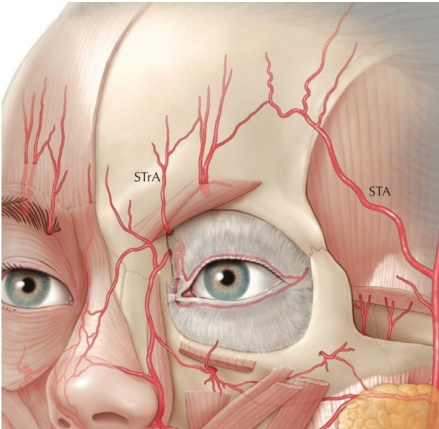
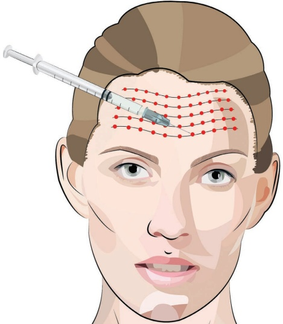
-
对额部皮肤消毒。考虑眶上神经和眶周神经阻滞。
-
使用高倍稀释的CaHA，配以 1–1.5 mL 的利多卡因和肾上腺素（1:200000），每 1.5 mL 注射器使用。
-
将 27G 或 28G 针头朝向斜面（bevel up）推进至真皮层，角度约为 10-20°，以防止针头穿透真皮层。
-
在深真皮层注射，保持朝向斜面；不要过浅（不能看到针头的灰色部分），也不要过深；危险区域主要位于此处的皮下脂肪内。沿着水平皱纹方向注射，可采用逆行或小剂量分次注射，每次最大 0.025 mL（图9.3）。
-
注射时使用低压力；使用小体积（逆行注射保持在 0.04 mL 以下）[1]。
-
根据需要进行平滑处理。
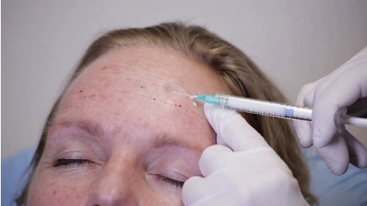
9.3 术后护理
如有必要，可手动按摩该区域以使产品均匀分布。注射后可能会出现水肿，通常持续一天。应告知患者，皮肤的年轻化是一个需要数月缓慢的过程，即使可以观察到即时效果。
9.4 实现最佳效果的附加治疗
为进一步减少额部的水平纹，可使用肉毒毒素放松额肌，理想情况下是在羟基磷灰石钙（CaHA）治疗前一至两周进行。考虑将填充剂置于额肌深层（额凹），以诱导肌模调节，从而使拉伸肌肉时具有较低的基础张力和肌肉活动度。
有关术前和术后效果以及操作技术的更多信息，请参阅图 9.4。
9.5 C 角
C 角是指眼周的 C 形区域，范围从眶周脂肪垫（ROOF）所在的眶上区沿太阳穴、外眼环和睑颊沟延伸至 V 型面部畸形和眶下区的泪沟。因此，C 角是评估眼部吸引力的关键解剖亚单位 [2]，在治疗该区域时必须小心，因为它构成了面部地形学区域之一，由于周围眼周区域（眶上动脉、角动脉、眶下动脉、颧面动脉、颧颞动脉及其各自分支）穿行了大量动脉，存在较高的血管并发症风险 (图 9.5)。
随着年龄的增长，显著的骨吸收会影响软组织的位置。衰老的外观特征是眉毛似乎下降，这可能是由于骨吸收导致的眶上缘向上移动所致。太阳穴和颞嵴因体积丢失而出现骨质化（skeletonization）。眶下区表现为眶下缘的体积丢失，导致睑颊沟、V 型面部畸形和泪沟加深。因此，在骨膜上补充丢失的体积并提升颞部区域（通过靶向 TLA），如 Amaral 等人所建议的 [3]，可能有助于创造出自然年轻化的外观。在本节中，我们分享了一种结合了锐针和钝性套管针的注射技术。
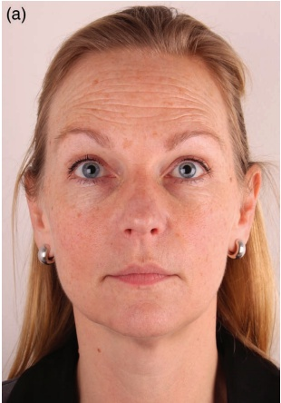
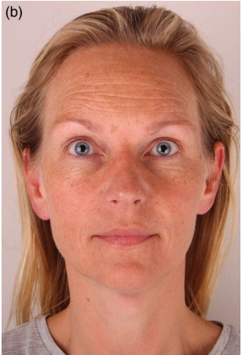
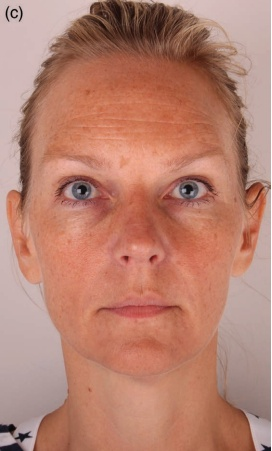
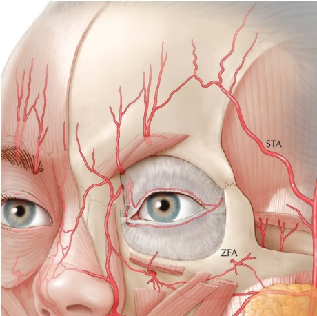
仅使用钝性套管针。至关重要的是将产品置于骨膜上，尤其是在眶下区域，以避免颧部水肿。
9.5.1 C角锐针和钝性套管针技术
注射定位，参见图 9.6。
9.5.2 分步技术
-
清洁并标记外侧眉、颞嵴、颞窝、睑颧沟、V型面部畸形和泪沟（图 9.7）。
-
可考虑对外侧眉和泪沟的进入点进行局部麻醉。
-
检查血管并在眉尾处建立进入点。
-
使用全粘度（未稀释）的 CaHA，配合 25G、38 mm 的钝性套管针或更粗的尺寸。
-
将钝性套管针推进皮肤。
-
用非惯用手抬高眉毛，将钝性套管针通过眼轮匝肌进入眶顶区域（ROOF）。
-
确保钝性套管针位于骨膜上，并沿着眶上嵴向内侧轻轻推进，直到距离眶上切迹约 1–2 cm 处。
-
当钝性套管针到达最远点时，用非惯用手保持眉毛抬高，并在其后方注射最大 0.025 mL 的线性丝状物（图 9.8）。
-
重复此步骤，直到注入约 0.1–0.2 mL。
-
取出钝性套管针，连接 27G、19 mm 的锐针。
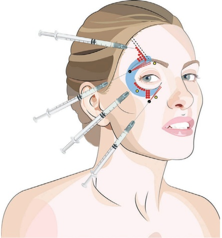
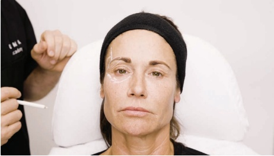
-
触摸颞区是否有搏动，并标记这些位置，以避免注射到浅颞动脉（图 9.9）。
-
在抬高眉毛的情况下，将锐针朝锥度向下推进至颞嵴与外侧眶缘交汇处的骨膜上，并注射 0.05 mL。
-
部分后退并重新定位锐针至外侧颞嵴的骨膜上，在保持抬高眉毛的情况下，注射多个额外的 0.05 mL 的团注。
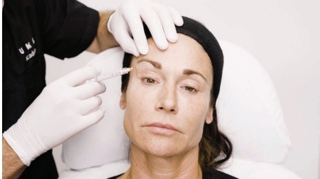
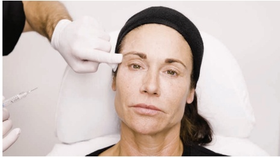
-
如有需要，沿颞嵴（temporal crest）继续注射多个团注以提升侧眉，并在颞窝（temporal hollow）进行体积填充（图9.10）。
-
将产品向上平铺并塑形至颞嵴。
-
确定颧颊沟（palpebromalar groove）的针头进针点。重新检查颧面孔（zygomaticofacial foramen）的可能位置。将针头推进眶下缘骨膜，位于眼轮匝肌保留韧带（orbicularis retaining ligament, ORL）下方（图9.11）。
-
注射一个约 0.025 mL 的团注。
-
部分回撤，重新定向，并在第一个团注处外侧 1–2 mm 处注射另一个 0.025 mL 的团注。
-
如有需要，可包括颊部顶点（apex of the cheek）。
-
重复此过程，直到注射约 0.1–0.3 mL 为止。
-
确定V型面部缺陷区（V-frame deformity），位于眶下孔（infraorbital foramen）的侧方（图9.12）。
-
将针头推进眶下缘骨膜，位于 ORL 下方。
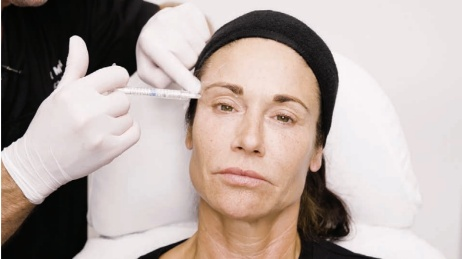
- 在骨膜上，使用钝侧（bevel down）注射多个约 0.05 mL 的团注。
-
在用非惯用手提升颊部的同时，也在颧皮腱（ZCL）下方注射多个骨膜团注。
-
取出 27G 针头，更换为 25G、38 mm 的钝性套管针。
-
确定进入点时，应使其位于眼轮匝肌（orbicularis oculi）插入点的外侧，并使钝性套管针（cannula）能够到达内眼角泪沟（medial tear trough）（图 9.13）。
-
在眶周肌（orbicularis oculi）（和浅筋膜束系统；SMAS）以及颧骨隔（malar septum）的预孔处建立通道，并将钝性套管针推进至骨膜。
-
将钝性套管针沿骨膜推进至内眼角泪沟。
-
采用斜面朝下（bevel down），向后注射线性丝，每根约 0.05 mL，总量约为 0.1–0.2 mL。
-
用轻柔按摩均匀分布。
9.5.3 C角仅用钝性套管针技术 (C-Angle Cannula-Only Technique)
注射定位参见图 9.14。
9.5.4 分步技术 (Step-by-Step Technique)
-
对颞嵴、额尾、颞窝、睑颧沟、V型凹陷和泪沟进行消毒并标记（图 9.15）。
-
标记并麻醉预孔。
-
检查血管，并在眉尾处建立进入点。
-
使用全粘度（未稀释）的羟基磷灰石钙（CaHA），配合 25G、38mm 的钝性套管针或更粗的尺寸。
-
将钝性套管针推进皮肤内。
-
用非主导手支撑眉部，使钝性套管针穿过眼轮匝肌进入眶顶（ROOF）（图 9.16）。
-
确保钝性套管针位于骨膜上，并沿着眶上缘向内侧轻柔推进，直至距离眶上切迹约 1–2 cm 的位置。
-
当钝性套管针到达最远点时，用非主导手保持眉部抬高，注射一根最大剂量为 0.025 mL 的后行线性丝。
-
重复此步骤，直到注射总量达到约 0.1–0.2 mL。
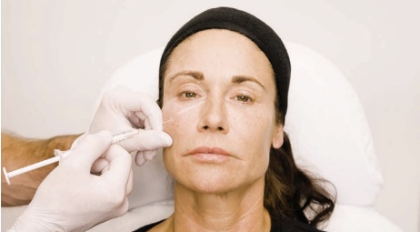
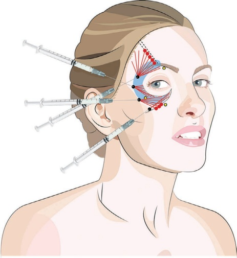
-
在对眉部注射后，将钝性套管针推进到解剖层 4（位于眼轮匝肌下方，位于颞骨-顶骨筋膜下方）至颞嵴。
-
用非注射手支撑眉部抬高，同时沿着颞嵴推进钝性套管针（图 9.17）。
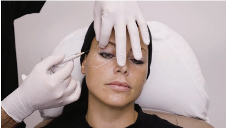
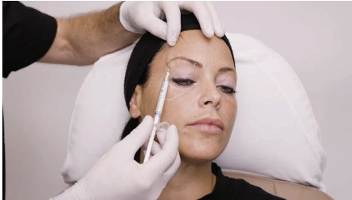
-
可使用多次穿刺点，沿颞嵴以约 0.05 mL 的团注量注入产品。
-
可采用有目的的塑形技术，将产品向上按摩以支撑上颞隔。
-
从第二个进入点，可在筋膜间隙内向颞窝注射额外的逆行线状填充剂。
-
利用这个第二个进入点，可以进行眶环和颧部保留韧带的提升（图 9.18）。
-
将钝性套管针推进至骨膜层。可能需要一定的力量才能将钝性套管针穿过外侧眼眶增厚区域。
-
在骨膜上，在眶环下方注射少量约 0.025–0.05 mL 的逆行线状填充剂。
-
第三个进入点也可用于治疗与 V 形面部缺陷相邻的睑颊沟。
-
将钝性套管针推进至眶环和颧骨韧带之间，朝向瞳孔中线（图 9.19）。
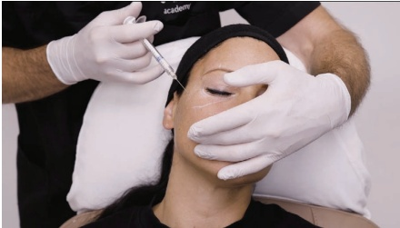
-
注射少量约 0.05 mL 的填充剂。
-
将钝性套管针推进至颧骨韧带。
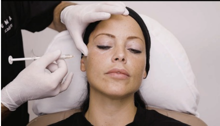
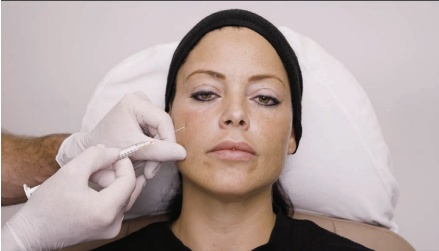
-
在韧带下方注射少量 0.05 mL 的团注，并注射 0.05 mL 的逆行填充剂，然后退回到进入点。
-
第四个进入点用于治疗泪沟（图 9.20）。
-
制作预孔，将钝性套管针通过眼轮匝肌（SMAS）和前颌骨滑移间隙（颧隔）推进至骨膜层。
-
将钝性套管针沿骨膜向内侧泪沟推进。
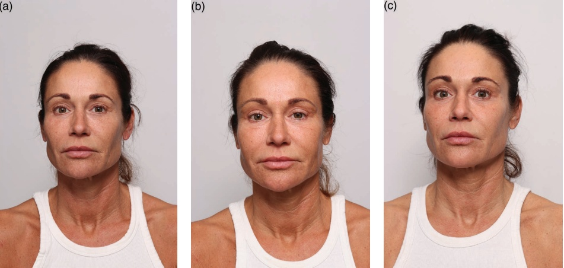
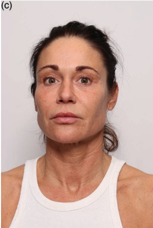
-
以斜面朝下（bevel down）的方式，向逆行性地注射约 0.05 mL 的线性丝，总计约 0.1–0.2 mL。
-
用轻柔按摩均匀分布。
9.6 术后护理
如有必要，可手动按摩该区域以使产品均匀分布。进行此操作时，应采用有目的的塑形（“摇动”或“滚压”）技术，即向上提拉组织，然后将产品按摩到所需的形状中，尤其是在颞嵴沿的保留韧带（上颞缝）处、太阳穴（下颞缝、睑颊沟、眼轮匝肌保留韧带、泪富韧带）、V 形成缺陷（ZCL）和泪沟（泪沟韧带）。注射后，由于该区域压力增加，可见静脉和浅颞动脉扩张。注射区域的肿胀可能不均匀，因此应告知患者任何肿胀都是可以预期的且是暂时的，通常持续一天，但最长可达五天。在太阳穴使用锐针进行骨膜下注射时，由于该技术主要将产品注射到肌肉层，可能会预期出现咀嚼肌活动时的疼痛。
9.7 为达到最佳效果的附加治疗
可以考虑结合肉毒毒素进行改善 C 角、眉部重塑和皱纹淡化。此外，根据患者的具体情况和需求，可能建议使用局部乳膏、去角质或激光进行皮肤改善。
参考文献
[1] T. T. Khan et al., “An anatomical analysis of the supratrochlear artery: Considerations in facial filler injections and preventing vision loss,” Aesthet Surg J, vol. 37, no. 2, pp. 203–208, Feb. 2017.
[2] M. S. Alghoul et al., “Enhancing the lateral orbital ‘C-Angle’ with calcium hydroxylapatite: An anatomic and clinical study,” Aesthet Surg J, vol. 41, no. 8, pp. 952–966, Aug. 2021.
[3] V. M. Amaral et al., “An innovative treatment using calcium hydroxyapatite for non-surgical facial rejuvenation: The vectorial-lift technique,” Aesthetic Plast Surg, vol. 48, no. 17, pp. 3206–3215, Sep. 2024.